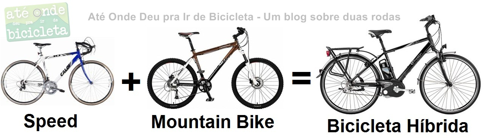

Sobre este manual
Boa parte dos problemas mais comuns em uma bicicleta — pneu murcho, corrente seca, freio desregulado — pode ser resolvida em poucos minutos, sem precisar levar a bike a uma oficina. Este manual reúne os cuidados básicos que valem a pena virar rotina, seja para uma bicicleta urbana do dia a dia, uma MTB de trilha ou uma speed de estrada.
Revisar a bike antes de sair de casa leva menos de cinco minutos e evita boa parte dos problemas no meio do caminho.

não quero ver uma linha de css
Este projeto foi entregue em , como atividade prática da disciplina.